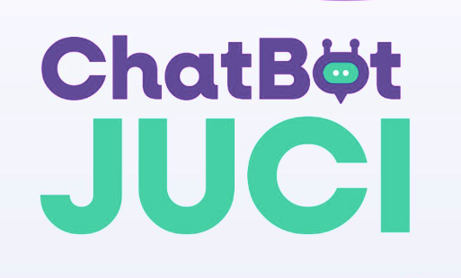

Chatbot JUCI
Assistente virtual baseada em LLMs opensource e RAG para o Tribunal de Justiça do Estado do Amapá, facilitando o acesso do cidadão aos serviços do judiciário.
Ver NotíciaFormando em Ciência da Computação pela Universidade Federal do Amapá, sou apaixonado por tecnologia e algoritmos, com experiência sólida em Python focado em LLMs e ferramentas como Langchain, Llama Index, Ollama e Qdrant, além de DevOps.
Possuo conhecimentos avançados em bancos de dados como MySQL e MariaDB, e experiência prática em projetos universitários com servidores Linux, incluindo Apache, Nginx, PHP e MySQL. Também tenho expertise na configuração e manutenção de sistemas operacionais Linux e Windows.
Atualmente, sou residente de desenvolvimento de software no Tribunal de Justiça do Amapá (TJAP), onde liderei o desenvolvimento de um chatbot inovador para facilitar o acesso do cidadão aos serviços jurídicos, incluindo informações sobre o tribunal e consultas de processos. O projeto está disponível na página inicial do site do TJAP.
Meu objetivo é simplificar soluções complexas, proporcionando uma experiência acessível e intuitiva ao usuário final.
Assistente virtual baseada em LLMs opensource e RAG para o Tribunal de Justiça do Estado do Amapá, facilitando o acesso do cidadão aos serviços do judiciário.
Ver NotíciaPlataforma inteligente baseado em IA que gera plantas baixas arquitetônicas a partir de descrições em texto, utilizando um LLM para criar layouts estruturados em JSON com grafos de adjacência.
Ver ProjetoTem algum projeto em mente? Quer colaborar ou tirar ideias do papel? Vamos conversar.